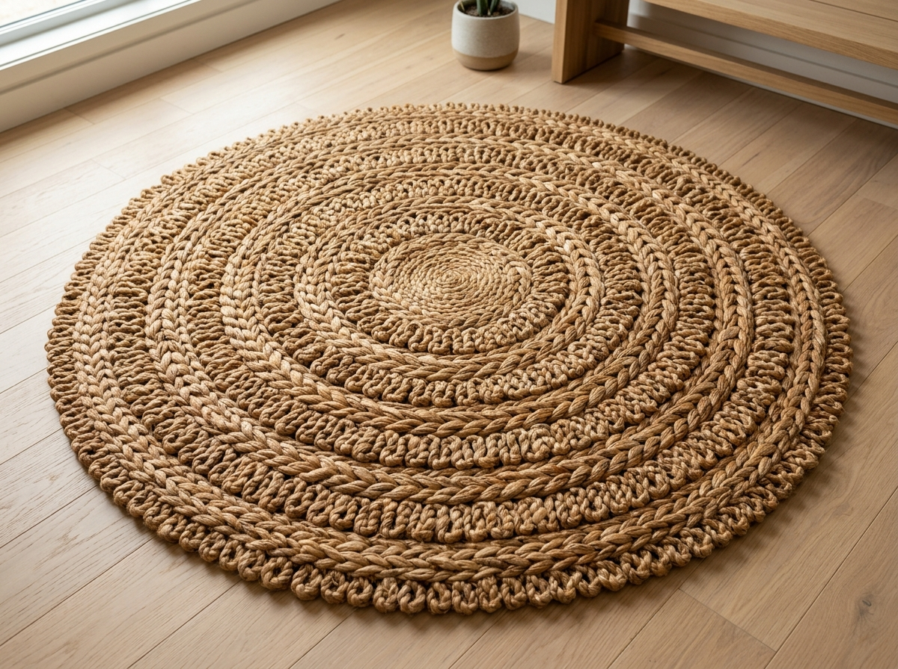

All Published Articles
9 articles
Highland Virgin Wool vs. Mulberry Silk: The Sensory Tradeoffs
An in-depth tactile analysis of lanolin durability, tensile strength, light refraction, and bedroom acoustics.

How to Identify Authentic Hand-Knotted Rugs from Machine Replicas
Inspecting the back warp knots, feeling the natural fringe anchors, and reading natural vegetable abrash color variations.

The Vacuuming Paradox: Why Rotating Beater Bars Destroy Silk Knots
Why museum conservators only utilize straight suction, and the ideal monthly cadence for rotating large dining carpets.

Harmonizing Earth Tones: Integrating Terracotta & Sand Rugs with Japandi Furniture
How subtle grounding palettes bridge raw white-oak timbers, linen drapery, and minimalist interior lighting schemes.

The 2026 Resurgence of Sculpted High-Low Piles and Organic Silhouettes
Architects and interior curators are turning away from rigid rectangular boundaries in favor of undulating, sculptural perimeters.

Emergency Spill Protocols: First-Aid for Red Wine, Olive Oil & Coffee on Wool
The natural chemistry of wool lanolin, and why aggressive rubbing damages fibers. Exact step-by-step blotting protocols.

Layering Vintage Runners: Adding Tactile Depth to Modern Polished Concrete
Architectural strategies for introducing historical warmth to brutalist stone and expansive floor-to-ceiling glass pavilions.

Choosing the Perfect Rug Material for Every Room
Discover how wool, cotton, silk, and natural fibers perform in living rooms, bedrooms, dining spaces, and high-traffic areas.

The Architectural Proportions of Room Framing: Sizing Your Rug to Anchor Furniture
Why a rug that is six inches too short breaks room continuity, and how architects calculate the golden perimeter margin between baseboards and rug borders.